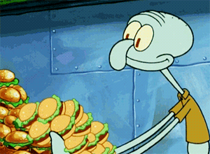

This Giant's Favorite Things
Movies

I LOVE to watch movies on my free time. My favorite generes are horror, comedy, romance, action, drama, and musical. These are my top 5 movies of all time:
Annie (1982)

Titanic (1997)

The Conjuring 2 (2016)
The Notebook (2004)
The Princess and the Frog (2009)
Foods
I love food like Oprah loves bread. My favorite types of food are Mexican, Thai, Nigerian, American, and Vietnamese. Here are my top 5 favorite dishes:
Carne Asada Fries
Drunken Noodles
Rice and Stew
Burgers